初迹 FirstTrace
围绕 4–6 个月翻身期宝宝的成长需求，完成产品形态、包装再利用和辅助指南设计。
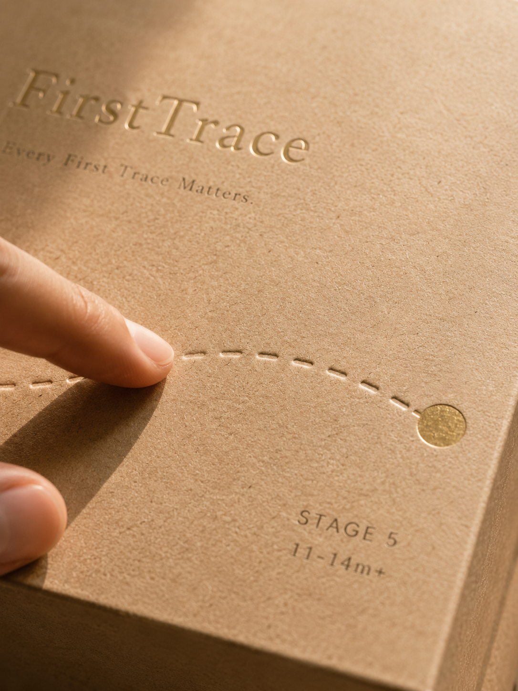
01 / PROJECT OVERVIEW
从一次翻身开始，设计宝宝的第一次探索。
项目类型母婴产品设计
服务对象4–6 个月婴儿与家长
设计范围产品 · 包装 · 指南
核心命题安全、抓握、探索
02 / CONTEXT
让“翻身”成为第一次探索。
4–6 个月是宝宝开始尝试翻身的重要阶段。对宝宝来说，这是身体第一次主动探索世界；对父母来说，则意味着新的安全问题和陪伴方式。
项目从一个具体动作出发，将抓握、扭转、翻身和探索转化为连续的产品体验。
03 / DESIGN LOGIC
抓握 → 扭转 → 翻身 → 探索世界
通过柔和的曲线、适合小手的尺寸和可被感知的声音反馈，让宝宝在安全范围内主动完成动作。
行为观察产品形态触觉反馈包容性设计
04 / RESEARCH & EXPLORATION
先把问题摊开，再把路径收拢。
这一组过程图记录了品牌从问题定义、成长阶段、字标探索到包装体验的推演过程。
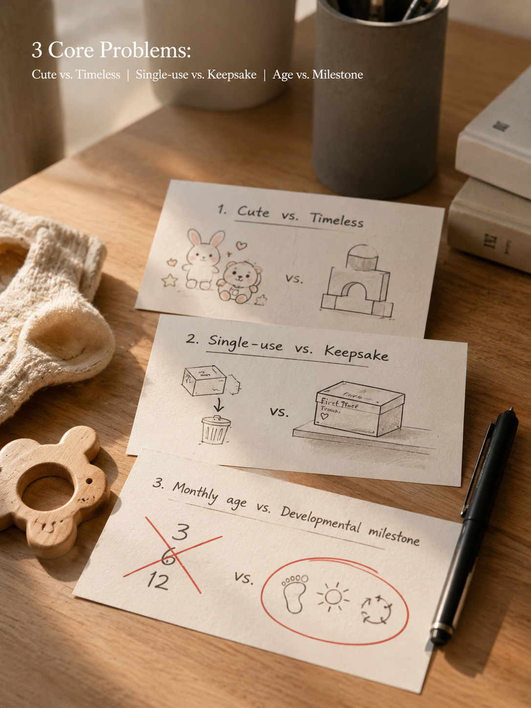
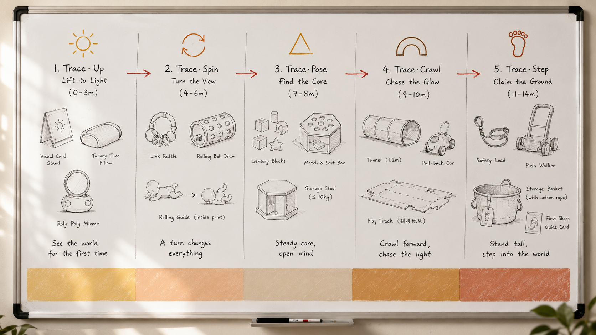
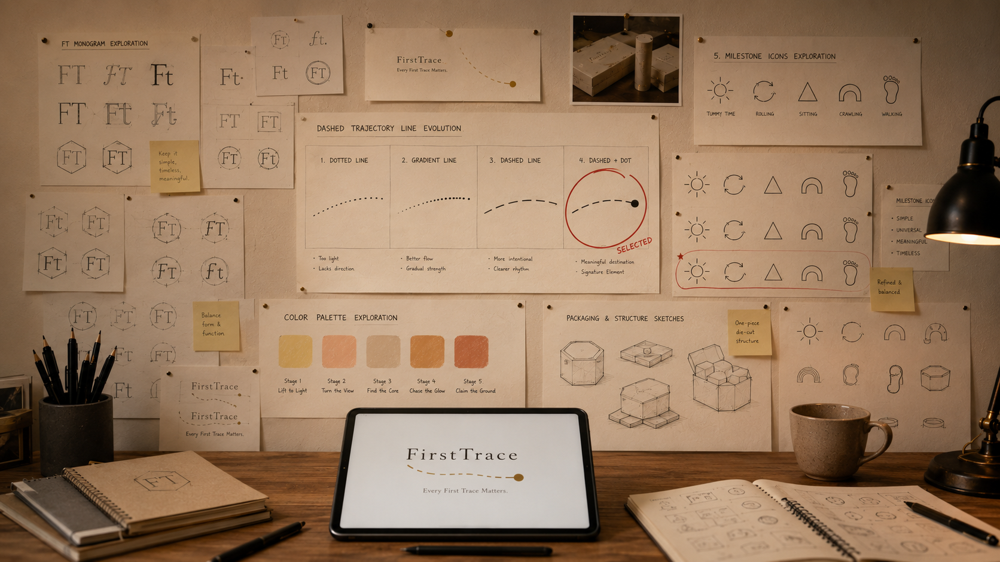
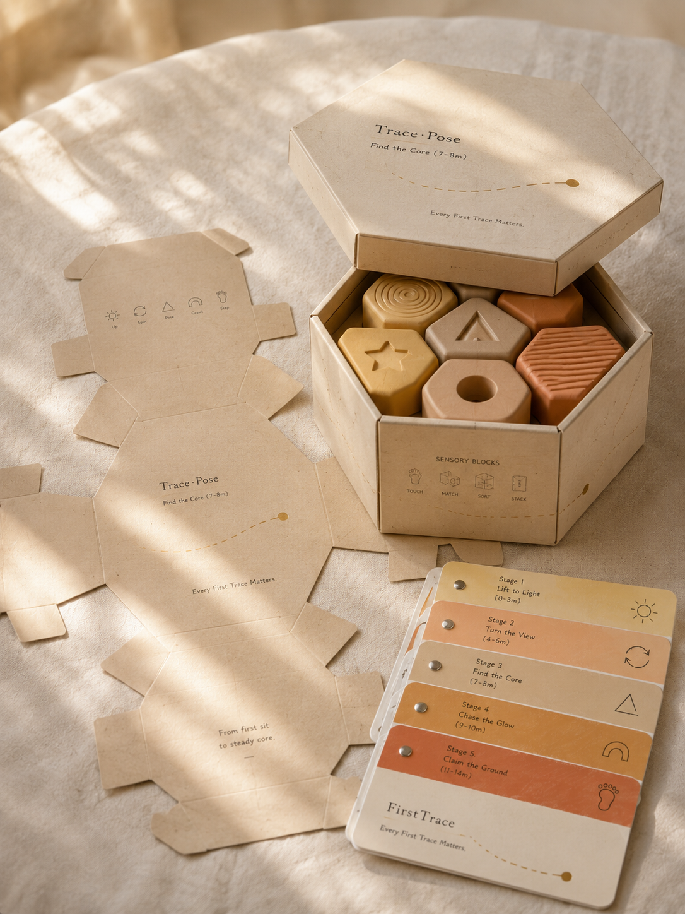
04 / VISUAL PROCESS
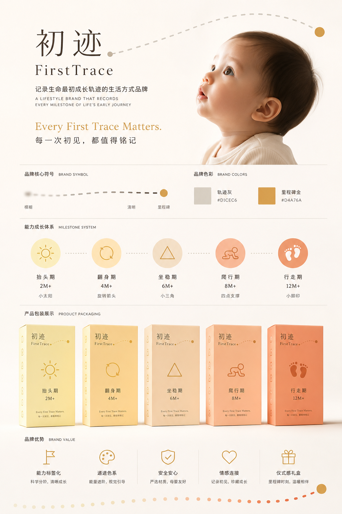
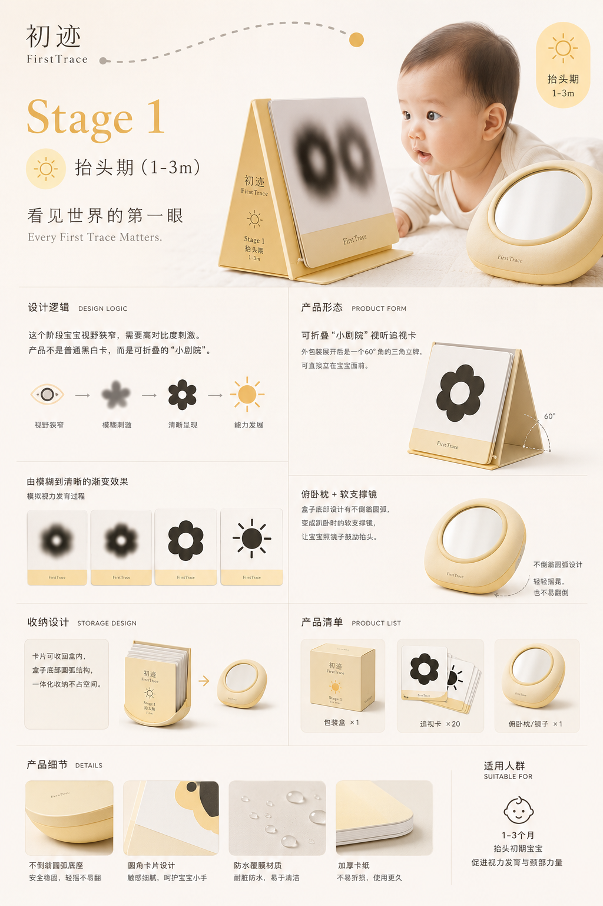
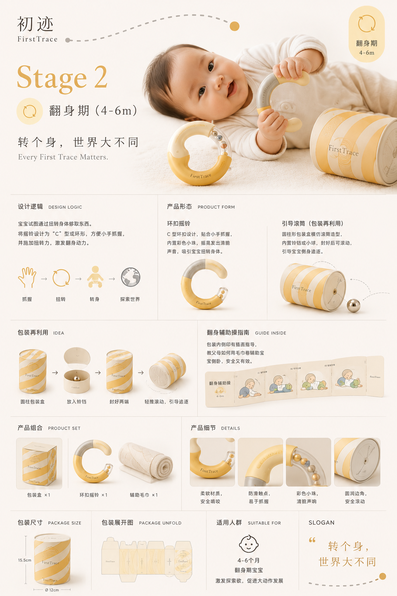
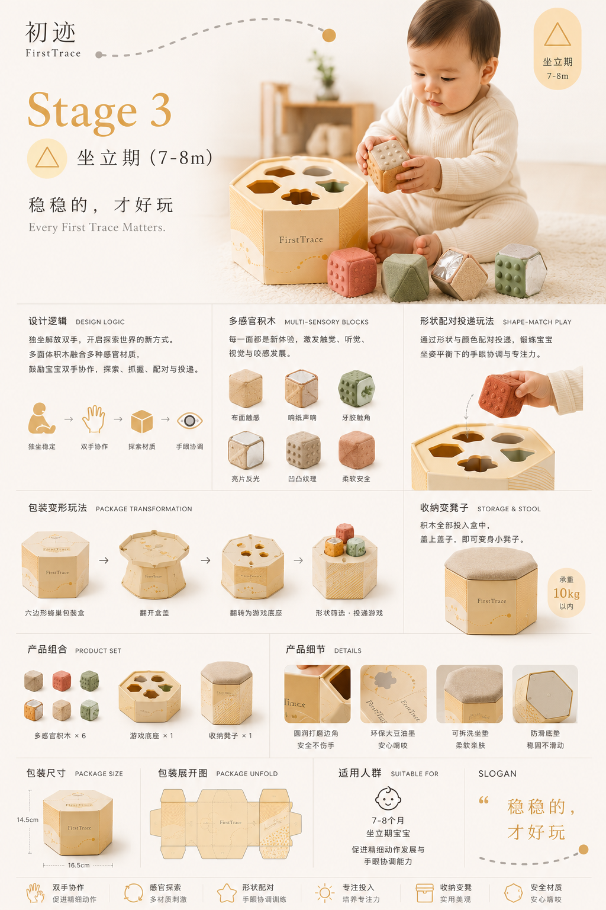
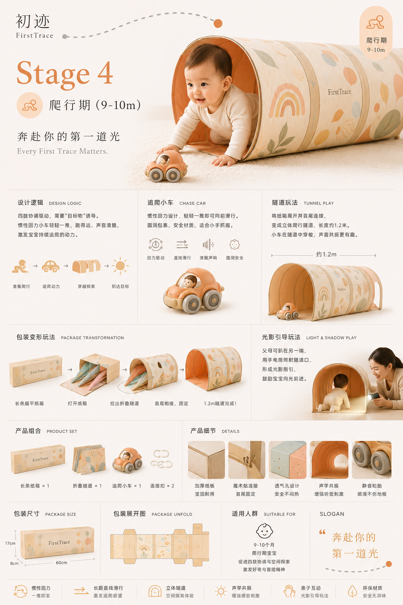
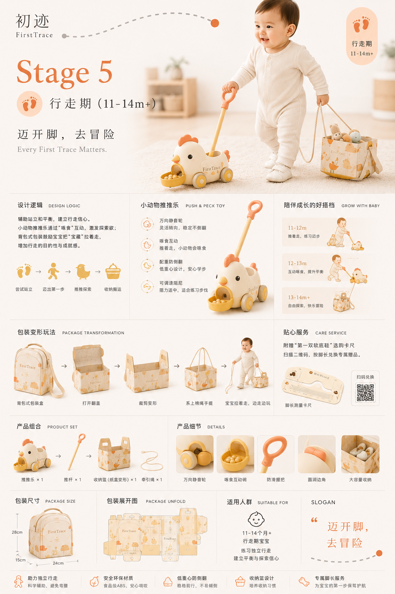
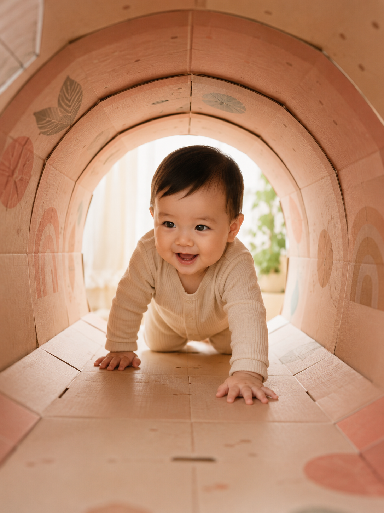
05 / PRODUCT SYSTEM
产品、包装和指南组成一套完整陪伴系统。
环扣摇铃：贴合小手抓握，摇晃时产生轻柔声响，引导宝宝转动身体。
包装再利用：包装盒可以转化为滚动玩具，减少一次性包装并延长使用周期。
翻身辅助指南：用连续插画帮助父母理解动作阶段，让陪伴更安全。
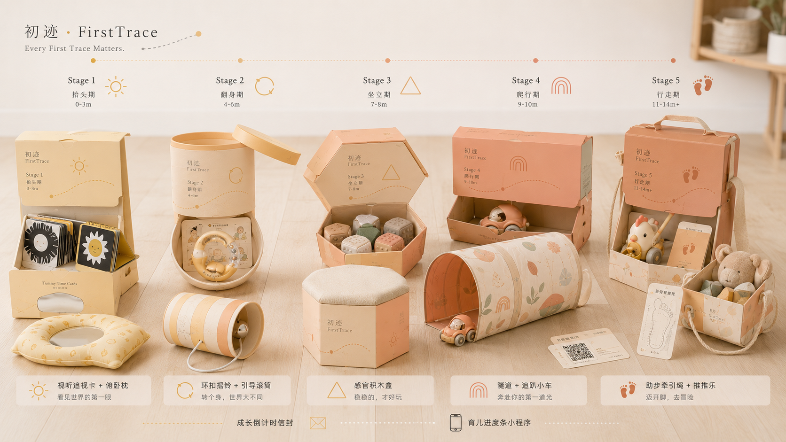
06 / OUTCOME
每一次初见都值得被认真对待。
最终形成了产品、包装和辅助指南组成的完整体验系统，让宝宝的第一次翻身更安全，也让父母更容易理解和参与。